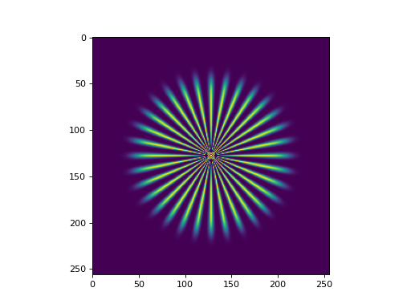

pyxu.util#
pyxu.util.array_module#
- compute(*args, mode='compute', **kwargs)[source]#
Force computation of Dask collections.
- Parameters:
*args (
object,list) – Any number of objects. If it is a dask object, it is evaluated and the result is returned. Non-dask arguments are passed through unchanged. Python collections are traversed to find/evaluate dask objects within. (Usetraverse=False to disable this behavior.)mode (
str) – Dask evaluation strategy: compute or persist.**kwargs (
dict) – Extra keyword parameters forwarded todask.compute()ordask.persist().
- Returns:
*cargs – Evaluated objects. Non-dask arguments are passed through unchanged.
- Return type:
- copy_if_unsafe(x)[source]#
Copy array if it is unsafe to do in-place updates on it, i.e.
if the array is read-only, OR
if the array is a view onto another array.
- get_array_module(x, fallback=None)[source]#
Get the array namespace corresponding to a given object.
- Parameters:
x (
object) – Any object compatible with the interface of NumPy arrays.fallback (
ArrayModule) – Fallback module ifxis not a NumPy-like array. Default behaviour: raise error if fallback used.
- Returns:
namespace – The namespace to use to manipulate
x, orfallbackif provided.- Return type:
- redirect(i, **kwargs)[source]#
Change codepath for supplied array backends.
Some functions/methods cannot be written in module-agnostic fashion. The action of this decorator is summarized below:
Analyze an array-valued parameter (
x) of the wrapped function/method (f).If
xlies in one of the supplied array namespaces: re-route execution to the specified function.If
xlies in none of the supplied array namespaces: executef.
- Parameters:
i (
VarName) – name of the array-like variable infto base dispatch on.kwargs (
Mapping) –key[
str]: array backend short-name as defined inNDArrayInfo.value[
collections.abc.Callable]: function/method to dispatch to.
- Return type:
Notes
Auto-dispatch via
redirect()assumes the dispatcher/dispatchee have the same parameterization, i.e.:if
fis a function -> dispatch possible to another callable with identical signature (i.e., function or staticmethod)if
fis a staticmethod -> dispatch possible to another callable with identical signature (i.e., function or staticmethod)if
fis an instance-method -> dispatch to another instance-method of the class with identical signature.
Example
def f(x, y): return "f" @redirect('x', NUMPY=f) # if 'x' is of type NDArrayInfo.NUMPY, i.e. has def g(x, y): return "g" # short-name 'NUMPY' -> reroute execution to `f` x1 = np.arange(5) x2 = da.array(x1) y = 1 g(x1, y), g(x2, y) # 'f', 'g'
pyxu.util.complex#
- view_as_real(x)[source]#
View complex-valued array as its real-valued bijection. (Inverse of
view_as_complex().)- Parameters:
x (
NDArray) – (…, N) complex-valued array.- Returns:
y – (…, 2N) real-valued array.
- Return type:
Examples
from pyxu.util import view_as_real, view_as_complex x = np.r_[:3] + 1j * np.r_[2:5] # array([0.+2.j, 1.+3.j, 2.+4.j]) y = view_as_real(x) # array([0., 2., 1., 3., 2., 4.]) view_as_complex(y) == x # True
Notes
Real-valued inputs are returned unchanged. For complex-valued inputs, this function acts on the last axis as:
\[y_{2n-1} = \mathcal{R}(x_n), \quad y_{2n} = \mathcal{I}(x_n), \quad 1\leq n\leq N,\]where \(\mathcal{R}, \mathcal{I}\) denote the real/imaginary parts respectively.
- view_as_complex(x)[source]#
View real-valued array as its complex-valued bijection. (Inverse of
view_as_real().)- Parameters:
x (
NDArray) – (…, 2N) real-valued array.- Returns:
y – (…, N) complex-valued array.
- Return type:
Examples
from pyxu.util import view_as_real, view_as_complex x = np.arange(6.0) # array([0., 1., 2., 3., 4., 5.]) y = view_as_complex(x) # array([0.+1.j, 2.+3.j, 4.+5.j]) view_as_real(y) == x # True
Notes
Complex-valued inputs are returned unchanged. For real-valued inputs, this function acts on the last axis as:
\[y_n = x_{2n-1}+j \, x_{2n}, \qquad 1\leq n\leq N.\]
- view_as_real_mat(cmat, real_input=False, real_output=False)[source]#
View complex-valued matrix as its real-valued equivalent. (Inverse of
view_as_complex_mat().)Useful to transform complex-valued matrix/vector products to their real-valued counterparts.
- Parameters:
- Returns:
rmat –
The output shape depends on the values of
real_inputandreal_output:| real_input | real_output | rmat.shape | |------------|-------------|------------| | False | False | (2M, 2N) | | False | True | ( M, 2N) | | True | False | (2M, N) | | True | True | ( M, N) |
- Return type:
Examples
from pyxu.util import view_as_real_mat, view_as_complex_mat A = np.reshape( np.r_[:6] + 1j * np.r_[2:8], # array([[0.+2.j, 1.+3.j, 2.+4.j], newshape=(2, 3), # [3.+5.j, 4.+6.j, 5.+7.j]]) ) B = view_as_real_mat(A) # array([[ 0., -2., 1., -3., 2., -4.], # [ 2., 0., 3., 1., 4., 2.], # [ 3., -5., 4., -6., 5., -7.], # [ 5., 3., 6., 4., 7., 5.]])
Notes
Real-valued matrices are returned unchanged.
Complex-valued matrices \(A\in\mathbb{C}^{M\times N}\) are mapped into a real-valued matrix \(\hat{A}\in\mathbb{R}^{2M\times 2N}\) defined, for \(1\leq n \leq N\), \(1\leq m\leq M\) as
\[\begin{split}\hat{A}_{2m-1,2n-1} = \mathcal{R}(A_{m,n}), & \quad \hat{A}_{2m-1,2n} = -\mathcal{I}(A_{m,n}),\\ \hat{A}_{2m,2n-1} = \mathcal{I}(A_{m,n}), & \quad \hat{A}_{2m,2n}=\mathcal{R}(A_{m,n}).\end{split}\]If
real_[in|out]put=True, then even columns/rows (or both) are furthermore dropped. We haveview_as_real(A @ x) = view_as_real_mat(A) @ view_as_real(x).
See also
- view_as_complex_mat(rmat, real_input=False, real_output=False)[source]#
View real-valued matrix as its complex-valued equivalent. (Inverse of
view_as_real_mat().)Useful to transform real-valued matrix/vector products to their complex-valued counterparts.
- Parameters:
rmat (
NDArray) –Real-valued matrix. Accepted dimensions depend on the values of
real_inputandreal_output:| real_input | real_output | rmat.shape | |------------|-------------|------------| | False | False | (2M, 2N) | | False | True | ( M, 2N) | | True | False | (2M, N) | | True | True | ( M, N) |
real_input (bool) –
real_output (bool) –
- Returns:
cmat – (M, N) complex-valued matrix.
- Return type:
Examples
from pyxu.util import view_as_real_mat, view_as_complex_mat A = np.array([[ 0., -2., 1., -3., 2., -4.], [ 2., 0., 3., 1., 4., 2.], [ 3., -5., 4., -6., 5., -7.], [ 5., 3., 6., 4., 7., 5.]]) B = view_as_complex(A) # array([[0.+2.j, 1.+3.j, 2.+4.j], # [3.+5.j, 4.+6.j, 5.+7.j]])
Notes
Complex-valued matrices are returned unchanged.
Real-valued matrices are mapped into a complex-valued matrix \({A}\in\mathbb{C}^{M\times N}\) as follows:
\(\hat{A}\in\mathbb{R}^{2M\times 2N}\): \(A_{m,n} = \hat{A}_{2m-1,2n-1} + j \hat{A}_{2m,2n-1}\),
\(\hat{A}\in\mathbb{R}^{M\times 2N}\): \(A_{m,n} = \hat{A}_{m,2n-1} - j \hat{A}_{m,2n}\),
\(\hat{A}\in\mathbb{R}^{2M\times N}\): \(A_{m,n} = \hat{A}_{2m-1,n} + j \hat{A}_{2m,n}\),
\(\hat{A}\in\mathbb{R}^{M\times N}\): \(A_{m,n} = \hat{A}_{m,n} + 0j\),
for \(1\leq n \leq N\), \(1\leq m\leq M\).
See also
pyxu.util.inspect#
pyxu.util.misc#
- peaks(x, y)[source]#
Matlab 2D peaks function.
Peaks is a function of two variables, obtained by translating and scaling Gaussian distributions. (See Matlab’s peaks function.)
This function is useful for testing purposes.
- Parameters:
- Returns:
z – Values of the 2D function
peaksat the points specified by the entries ofxandy.- Return type:
Examples
import numpy as np import matplotlib.pyplot as plt from pyxu.util.misc import peaks x = np.linspace(-3, 3, 1000) xx, yy = np.meshgrid(x, x) z = peaks(xx, yy) plt.figure() plt.imshow(z)
(
Source code,png,hires.png,pdf)
{kind=link}
{kind=link}
- star_like_sample(N, w, s, po, x0, ndi=NDArrayInfo.NUMPY)[source]#
Star-like test image.
Generates a (N, N) square image of a star-like object normalized between 0 and 1. Based on GlobalBioIm’s StarLikeSample function. This function is useful for testing purposes as it contains high-frequency information.
- Parameters:
N (
Integer) – Size of the image (must be an even number).w (
Integer) – The number of branches of the sample will be 4*w.s (
Real) – Slope of the sigmoid function \(\frac1{1+\exp[s (x-x_{0})]}\) attenuating the boundaries.po (
Integer) – Power-raising factor for the final image (to have smoother edges).x0 (
Real) – Radial shift of the sigmoid function \(\frac1{1+\exp[s (x-x_{0})]}\).ndi (
NDArrayInfo) – Desired array module for the output.
- Returns:
image – (N, N) image of star-like sample.
- Return type:
Examples
import numpy as np import matplotlib.pyplot as plt from pyxu.util.misc import star_like_sample star = star_like_sample(N=256, w=8, s=20, po=3, x0=0.7) plt.figure() plt.imshow(star)
(
Source code,png,hires.png,pdf)
{kind=link}
{kind=link}
pyxu.util.operator#
- _dask_zip(func, data, out_shape, out_dtype, parallel)[source]#
(This is a Low-Level function.)
Computes the equivalent of
out = [f(x) for (f, x) in zip(func, data)], with the following semantics:If
datacontains only NUMPY/CUPY arrays, thenoutis computed as above.If
datacontains only DASK arrays, then entries ofoutare computed:if
parallelenabled -> dask-delay eachfunc, then evaluate in parallel.if
paralleldisabled -> dask-delay eachfunc, then evaluate in sequence. (This is useful iffuncs share a common resource, thus not thread-safe.)
For Dask-array inputs, this amounts to creating a task graph with virtual dependencies between successive
funccalls. In other words, the task graph looks like:_dask_zip(func, data, parallel=True) -> out +----+ +----+ data[0]-->|func|-->blk[0]-+-->|list|-->out . +----+ | +----+ . | . +----+ | data[n]-->|func|-->blk[n]-+ +----+ ========================================================================================================== _dask_zip(func, data, parallel=False) -> out +----+ +-------------------+----------------+--------------------+----+list|-->out | | | | +----+ | | | | +----+ | +----+ | +---+ | +----+ | data[0]-->|func|-->out[0]-+->|func|-->out[1]-->|...|-->out[n-1]-+->|func|-->out[n] +----+ | +----+ +---+ | +----+ | | data[1]-------------------+ | . | . | . | data[n]---------------------------------------------------------+
- Parameters:
func (
list) –Functions to apply to each element of
data.Function signatures are
Callable[[NDArray], NDArray].data (
list) – (N_data,) arrays to act on.out_shape (
list) –Shapes of
func[i](data[i]).This parameter is only used if inputs are DASK arrays. Its goal is to transform
Delayedobjects back to array form.out_dtype (
list) –Dtypes of
func[i](data[i]).This parameter is only used if inputs are DASK arrays. Its goal is to transform
Delayedobjects back to array form.parallel (bool) –
- Returns:
out – (N_data,) objects acted upon.
Outputs have the same backend/dtype as inputs, or as specified by
out_[shape,dtype].- Return type:
- _array_ize(data, shape, dtype)[source]#
(This is a Low-Level function.)
Transform a Dask-delayed object into its Dask-array counterpart. This function is a no-op if
datais not aDelayedobject.- Parameters:
shape (
NDArrayShape) –Shape of
data.This parameter is only used if
datais aDelayedobject. Its goal is to transform the former back to array form.dtype (
DType) –Dtype of
data.This parameter is only used if
datais aDelayedobject. Its goal is to transform the former back to array form.
- Returns:
arr – Dask-backed NDArray if
datawas aDelayedobject; no-op otherwise.- Return type:
- vectorize(i, method='scan', codim=None)[source]#
Decorator to auto-vectorize an array function to abide by
PropertyAPI rules.- Parameters:
i (
VarName) – Function parameter to vectorize. This variable must hold an object with a NumPy API.method (
str) –Vectorization strategy:
scancomputes outputs using a for-loop.parallelpasses inputs to DASK and evaluates them in parallel.scan_daskpasses inputs to DASK but evaluates inputs in sequence. This is useful if the function being vectorized has a shared resource, i.e. is not thread-safe. It effectively gives a DASK-unaware function the ability to work with DASK inputs.
codim (
Integer) –Size of the function’s core dimension output.
This parameter is only required in “parallel” and “scan_dask” modes.
- Return type:
Example
import pyxu.util as pxu @pxu.vectorize('x') def f(x): return x.sum(keepdims=True) x = np.arange(10).reshape((2, 5)) f(x[0]), f(x[1]) # [10], [35] f(x) # [10, 35] -> would have retured [45] if not decorated.